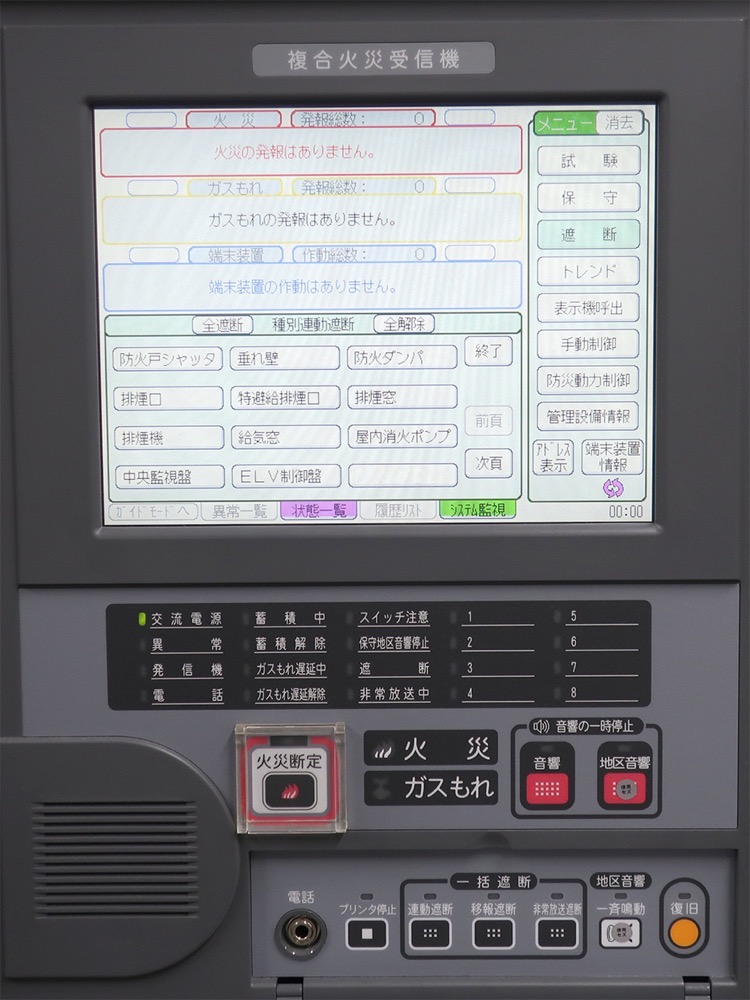
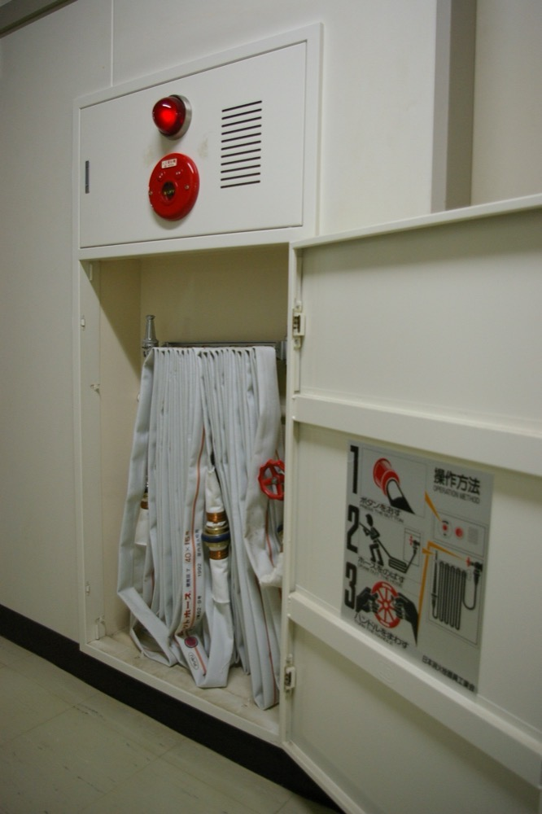

空調・電気・消防の設備を法定点検する中小企業を、融資で1社ずつ買収して1つの会社に束ねる事業である。顧客はビルや工場の所有者と管理会社で、点検契約は毎年更新される。買収後は営業・調達・人材採用・点検報告の作成を本部で共通化し、利益率を上げる。
| 区分 | 金額 | 年度 | 出典 |
|---|---|---|---|
| ビル管理市場 全体（清掃・設備管理・警備等、元請金額） | 5兆1,615億円 | 2024 | 1 |
| 同 予測 | 5兆2,685億円 | 2025 | 1 |
| うち事務所ビル | 約1兆1,200億円 | 2024 | 1 |
| うち商業施設 | 約9,268億円 | 2024 | 1 |
| うち工場・作業所 | 約4,761億円 | 2024 | 1 |
| 能美防災 保守点検等の売上 | 367億円 | 2026年3月期 | 7 |
ビル管理市場5.16兆円は清掃と警備を含む。設備保守だけの市場規模は公的統計で確認できなかった。
推計: 設備保守の市場を、ビル管理市場5.16兆円 × 設備管理の比率と置く。設備管理の比率は確認できなかったため、仮に3割とすると約1.5兆円になる。この3割は仮定であり、矢野経済研究所の有料報告書で確認を要する。
世界の設備保守市場の総額は信頼できる一次情報で確認できなかった。米国では、空調設備工事の Comfort Systems USA が2025年に売上91億ドルを計上した9。Blackstone 傘下の Legence は2026年の売上を26.5億〜28.5億ドルと見込む10。
| 会社 | 分野 | 売上高 | 営業利益 | 出典 |
|---|---|---|---|---|
| 能美防災 | 消防設備 製造・施工・保守 | 1,397億円 | 183億円 | 7 |
| 日本空調サービス | 空調設備の保守・工事 | 692億円 | 48億円 | 6 |
| 電気保安協会 | 自家用電気工作物の保安管理 | 法人数と売上は確認できなかった | ||
| 中小の点検会社 | 消防・電気・空調の点検 | 事業者数と売上は確認できなかった | ||
能美防災と日本空調サービスは2026年3月期。能美防災の数値は有価証券報告書を集計した二次資料による。
| 会社 | 経緯 | 結果 | 出典 |
|---|---|---|---|
| Comfort Systems USA | 1997年に株式公開と同時に空調会社12社を取得して発足した。目論見書は業界を4万社超の分散した市場と記した。1999年9月末までにさらに104社を取得した | 後に35社を売却または閉鎖し、13社を他の拠点に統合した。2025年の売上は91億ドルで、45%がデータセンター等の技術分野である | 89 |
| Legence（旧 Therma） | 2020年に Blackstone が取得し、20社超を追加取得した | 2025年9月にNasdaqに上場した。2026年の調整後EBITDAを2.95億〜3.15億ドルと見込む | 10 |
| Pye-Barker Fire & Safety | 消防設備の点検・保守会社を PE 2社の出資で買収してきた。2025年の取得件数は57件と報じられた | 2024年の売却手続きでは、EBITDA 3.5億ドルの17〜20倍の評価が報じられた | 1112 |
米国の先例が示す点は2つある。1つ目は、法定点検と保守の継続収入をもつ会社は高い倍率で評価されることである。2つ目は、統合の初期に買収した会社の3割近くを手放した Comfort Systems のように、買収の数だけでは利益が残らないことである。
サーチファンド型で始める。最初の6か月で1社目の買収先を選定し、融資で取得する。日本のサーチファンドは延べ10本に満たず、サーチファンド・ジャパンの1号・2号の投資実績は7件である16。先例が少ないため、金融機関への説明資料は自ら作成する。
| 用途 | 金額 | 内容 |
|---|---|---|
| サーチ期間の人件費・活動費 | 900万円 | 6か月。仲介会社・地銀・税理士への訪問 |
| 財務・法務・労務の調査費 | 600万円 | 補助金の専門家活用枠の対象。採択されれば一部が戻る |
| 1社目の株式取得の自己資金 | 2,000万円 | 取得価額の約1割 |
| 統合費用 | 300万円 | 点検管理システムの導入、会計の統一 |
| 予備費 | 200万円 | 運転資金 |
| 計 | 4,000万円 |
1社目の想定は、売上5億円、EBITDA 0.6億円の消防設備点検会社である。取得価額は EBITDA の4倍の2.4億円とする。内訳は自己資金0.2億円、公庫と地銀の融資1.9億円、売主への分割払い0.3億円である。借入はEBITDAの約3.7倍になる。
| 月 | 行うこと | 検証すること |
|---|---|---|
| 1〜3 | 仲介会社・地銀から候補50社を集め、10社と面談する | 売り手の希望価格と、技術者の年齢構成 |
| 4〜6 | 1社と基本合意し、財務調査を行う。公庫と地銀に融資を申し込む | 融資の金額・期間・保証の条件 |
| 7 | 株式を取得し、代表に就任する | 前経営者の引継ぎ期間と顧客の継続 |
| 8〜12 | 点検管理システムの導入、大口の管理会社への営業、2社目の候補選定 | 新規の点検契約を何件取れるか |
| 段階 | 資金の種類 | 借入先 | 条件の目安 |
|---|---|---|---|
| 1社目 | 株式取得資金 | 日本政策金融公庫の事業承継向け融資、地銀 | 国民生活事業で上限7,200万円13。残りを地銀で賄う |
| 1社目 | 売主への分割払い | 売り手 | 取得価額の1〜2割を3年で支払う。前経営者の引継ぎを確保する手段にもなる |
| 2〜5社目 | 株式取得資金 | 地銀、公庫の中小企業事業 | 既存子会社の現金収入を返済原資とする。中小企業事業の限度額は確認できなかった |
| 6社目以降 | 買収枠つきの融資 | メガバンク、地銀の協調融資 | グループ全体のEBITDAに対する借入倍率の上限を定める |
| 全期間 | 補助金 | 事業承継・M&A補助金 | 専門家費用の補助上限600万円15 |
借入で買収するため資金源の型はCである。工場や大型設備を持たない事業なので、担保は買収した会社の株式と将来の現金収入になる。
| 年目 | 売上 | 営業利益 | 累計投資 | 借入残高 | 子会社数 |
|---|---|---|---|---|---|
| 1 | 2.5億円 | -0.1億円 | 2.5億円 | 2.2億円 | 1 |
| 2 | 15億円 | 0.6億円 | 7億円 | 6億円 | 3 |
| 3 | 35億円 | 2.1億円 | 16億円 | 13億円 | 6 |
| 5 | 120億円 | 9.6億円 | 55億円 | 40億円 | 15 |
| 7 | 300億円 | 27億円 | 140億円 | 100億円 | 28 |
| 10 | 700億円 | 70億円 | 330億円 | 220億円 | 45 |
| 年目 | 売上 | 営業利益 | 累計投資 | 借入残高 | 子会社数 |
|---|---|---|---|---|---|
| 1 | 2.5億円 | -0.2億円 | 2.5億円 | 2.2億円 | 1 |
| 2 | 6億円 | 0.1億円 | 3.5億円 | 3億円 | 1 |
| 3 | 12億円 | 0.5億円 | 7億円 | 5.5億円 | 2 |
| 5 | 35億円 | 2.1億円 | 18億円 | 13億円 | 5 |
| 7 | 70億円 | 4.9億円 | 36億円 | 25億円 | 9 |
| 10 | 150億円 | 12億円 | 75億円 | 45億円 | 16 |
ビル管理市場5.16兆円1 の全体で10年以内に首位になる見込みはない。楽観の10年目の売上700億円は、この市場の約1.4%である。
首位に届く可能性があるのは、消防設備の保守点検に市場を限った場合である。能美防災の保守点検等の売上は367億円7 で、楽観では5年目から7年目の間にこれを超える。ただし、消防設備の保守点検市場が1,000億円以上かどうかは確認できなかった。空調保守に限ると、日本空調サービスの売上692億円6 に10年目で並ぶ水準である。
保守の場合は10年目に売上150億円、子会社16社で止まる。止まる原因は2つある。1つ目は、借入の返済が進むまで次の買収の融資が出ないことである。2つ目は、買収した会社の技術者が退職すると、買収した売上が維持できないことである。
法定点検の制度は国ごとに異なり、点検者の資格も国ごとに定められる。国内で作成した事業をそのまま海外に移すことはできない。
グローバルなインフラになる可能性は低い。海外で得られるのは日系顧客の追随需要が中心である。
| # | 基準 | 判定 | 根拠 |
|---|---|---|---|
| 1 | 50年、魂を燃やし続けられるか | 創業者が判定 | |
| 2 | 10年以内に国内市場規模1,000億円以上の市場でシェア1位になれるか | △ | 消防設備の保守は推計約4,660億円で1,000億円以上だが、能美防災を上回るのは楽観の買収をすべて消防に集中した10年目に限られる。 |
| 3 | 4,000万円で始められ、融資で伸ばせるか | ◎ | 公庫の事業承継向け融資と地銀融資で、自己資金の約10倍の会社を取得できる。 |
| 4 | グローバルなインフラになり得るか | × | 法定点検の制度と資格が国ごとに異なり、海外は日系顧客の追随に限られる。 |
| 5 | 営業力が最初の売上に直接結びつくか | △ | 最初の売上は買収で得るため、営業力は2年目以降の新規契約で効果を示す。 |
| 6 | 同じビジョンを共有する仲間を誘える事業か | 創業者が判定 | |
| 7 | 本業が早く現金を生み、返済と出資の原資になるか | ◎ | 点検契約は毎年更新される継続収入で、取得した月から現金が入る。 |
| 8 | 投資先を束ねる群の中核になれるか | ○ | 点検先の建物と設備の情報をもつため、ソフトウェアやセンサーの会社に顧客を提供できる。 |
| 9 | 成長の資金源がA・B・Cのどれに当たるか | C | 買収した会社の現金収入を返済原資に、借入で次の会社を買収する。 |
対象は、消防法第17条の3の3に基づく消防用設備等の点検と、点検で判明した不良箇所の整備工事である。本章ではこの2つを合わせて消防設備の保守と呼ぶ。新設工事と防火対象物点検は含めない。


| 区分 | 1,000㎡未満 | 1,000㎡以上 | 計 | 出典 |
|---|---|---|---|---|
| 特定防火対象物 | 745,580件 | 203,539件 | 949,119件 | 17 |
| 非特定防火対象物 | 2,188,340件 | 708,000件 | 2,896,340件 | 17 |
| 計 | 2,933,920件 | 911,539件 | 3,845,459件 | 17 |
| 点検報告率 | 42.2% | 71.5% | 49.1% | 18 |
| 点検が報告された対象物 推計 | 1,238,114件 | 651,750件 | 1,889,865件 |
対象物数は2014年3月31日時点で、これより新しい全国の件数は確認できなかった。点検報告率は2017年の消防庁資料により、計の報告率は本ページで算出した。点検が報告された対象物は、対象物数 × 点検報告率で算出した。
点検を行う技術者は、2025年3月31日時点で消防設備士が延べ137万6,123人である。消防設備点検資格者は第1種17万6,341人、第2種16万5,573人である20。いずれも資格の交付数であり、点検に従事する人数は確認できなかった。
推計: 点検の市場 = 1,000㎡以上の報告対象物 × 年間点検料 + 1,000㎡未満の報告対象物 × 年間点検料 = 651,750件 × 30万円 + 1,238,114件 × 5万円 = 1,955億円 + 619億円 ≒ 2,574億円
年間点検料は機器点検2回と総合点検1回、報告書の作成を含む額とした。30万円と5万円は本ページの仮定値であり、点検料の公的な統計は確認できなかった。1,000㎡未満を3万円に下げた場合、点検の市場が1,000億円を下回るのは、1,000㎡以上の年間点検料が約9.6万円を下回る場合に限られる。
整備工事を加えた保守の市場は、ホーチキの保守部門の構成から推計する。同社の2025年3月期の保守部門の売上は、点検が116億5,300万円、整備工事が94億3,200万円である21。整備工事は点検の0.81倍にあたる。
推計: 保守の市場 = 点検の市場 × (1 + 0.81) = 2,574億円 × 1.81 ≒ 4,660億円
点検だけの市場と保守の市場は、どちらも1,000億円以上の条件を満たす。ただし、点検料の仮定値と2014年の対象物数に依存する推計である。
| 会社 | 区分 | 売上 | 期 | 推計市場4,660億円に対する比率 | 出典 |
|---|---|---|---|---|---|
| 能美防災 | 保守点検等 | 367億円 | 2026年3月期 | 7.9% | 7 |
| ホーチキ | 保守部門 点検と整備工事 | 210.9億円 | 2025年3月期 | 4.5% | 21 |
| 日本ドライケミカル | メンテナンス事業 | 101億円 | 2026年3月期 | 2.2% | 22 |
ホーチキの売上は点検と整備工事の合計を本ページで算出した。日本ドライケミカルの数値は有価証券報告書を集計した二次資料による。
上位3社の合計は約679億円で、推計市場の約15%である。残りの約85%は、中小の点検会社とビル管理会社・警備会社の点検部門が占めると推定する。中小の点検会社の数は統計で確認できなかった。
参考になる数値として、全国ビルメンテナンス協会の調査がある。回答した146社は1年間に19,193件の対象物の点検を受注しており、1社当たり約131件である19。この平均で報告対象物の約189万件を割ると約1万4,000社に相当する。回答企業は協会の推薦企業で規模が大きいため、実際の事業者数はこれより多い可能性がある。
首位の基準は能美防災の保守点検等の売上とする。同社の保守点検等は2022年3月期の263億円から2026年3月期の367億円へ、年平均8.7%で増えた7。10年後の売上は、成長率の置き方で次のように変わる。
| 能美防災の年成長率 | 10年後の保守点検等の売上 | 本案の楽観10年目700億円との比較 |
|---|---|---|
| 3% | 493億円 | 本案が上回る |
| 5% | 598億円 | 本案が上回る |
| 6.7% | 702億円 | 並ぶ |
| 8.7% | 845億円 | 本案が下回る |
首位に届く条件は3つある。1つ目は、楽観計画の買収をすべて消防設備の保守会社に集中することである。第7章の楽観は、空調・電気・消防を合わせて10年目に700億円としている。2つ目は、能美防災の保守点検等の成長率が年6.7%以下に下がることである。3つ目は、消防設備の保守会社を10年で約200社取得することである。
約200社の根拠は次のとおりである。九州の消防設備点検・施工会社の売却案件は、売上1億〜2億円・従業員10〜19人で、譲渡希望額は1.1億円である23。1社の平均売上を3億円と置くと、200社 × 3億円 = 600億円になる。既存子会社の自然成長で約100億円を加えると700億円に達する。年平均20社の取得で、米国の Pye-Barker が2025年に取得した57件12の約3分の1である。取得価額を売上の0.5倍とすると累計投資は約300億円で、楽観の累計投資330億円の範囲に収まる。
点検料だけで比べると、首位の基準は下がる。ホーチキの保守部門に占める点検の比率55%を能美防災に当てはめると、同社の点検の売上は約200億円になる。年3%で増えると10年後は約270億円である。本案の消防の売上の55%が点検とすると、売上約490億円で並び、楽観では9年目に届く。能美防災の点検と整備工事の内訳は確認できなかったため、この比較は推計である。
順番は、顧客が同じで技術者の資格が近いものを先にした。改修工事は点検と同じ消防設備士が担う。電気保安は電気主任技術者を、空調保守は別の技術者を要するため後にした。
消防設備の保守に限っても、10年以内に首位に届く見込みは低い。届くとすれば10年目で、楽観計画の買収をすべて消防に集中し、能美防災の成長率が年6.7%以下に下がる場合に限られる。その時に必要な規模は売上約700億円・取得約200社・累計投資約300億円である。保守の計画では10年目の売上が150億円で、首位の約4分の1に留まる。第1弾で未確認だった市場規模は推計で約4,660億円となり、1,000億円以上の条件を満たす見込みである。